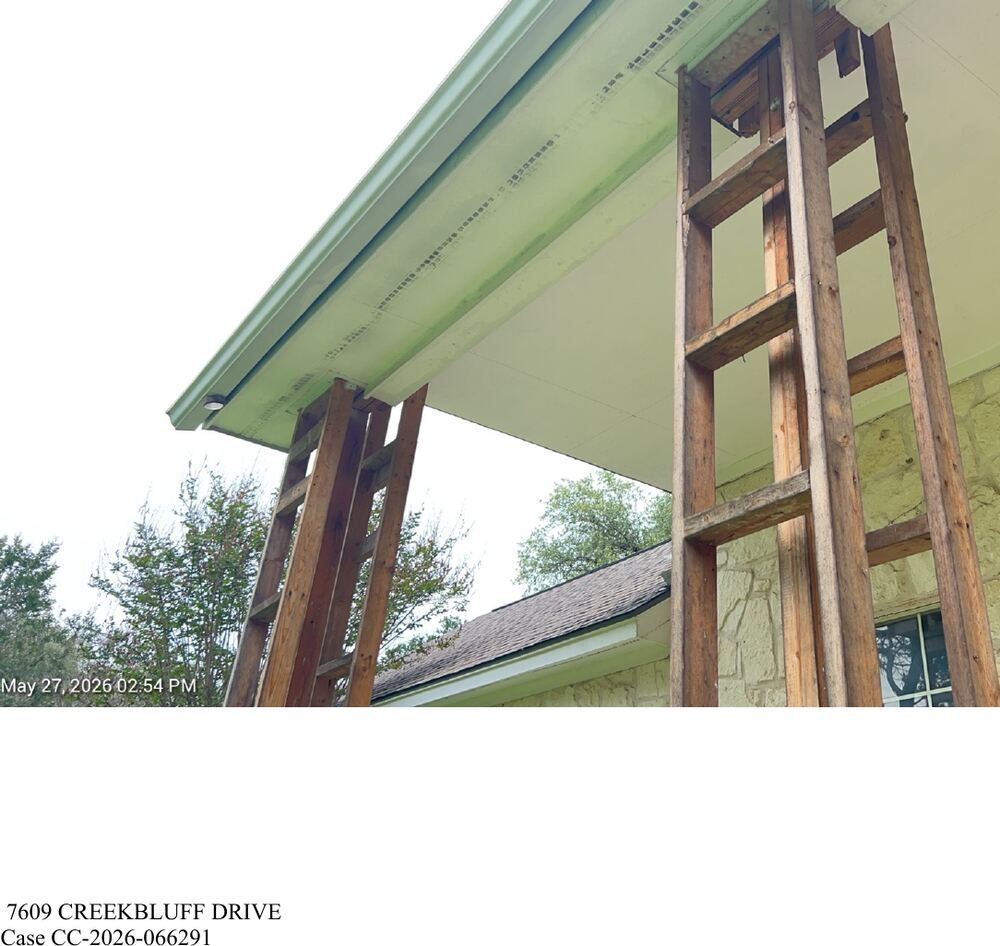
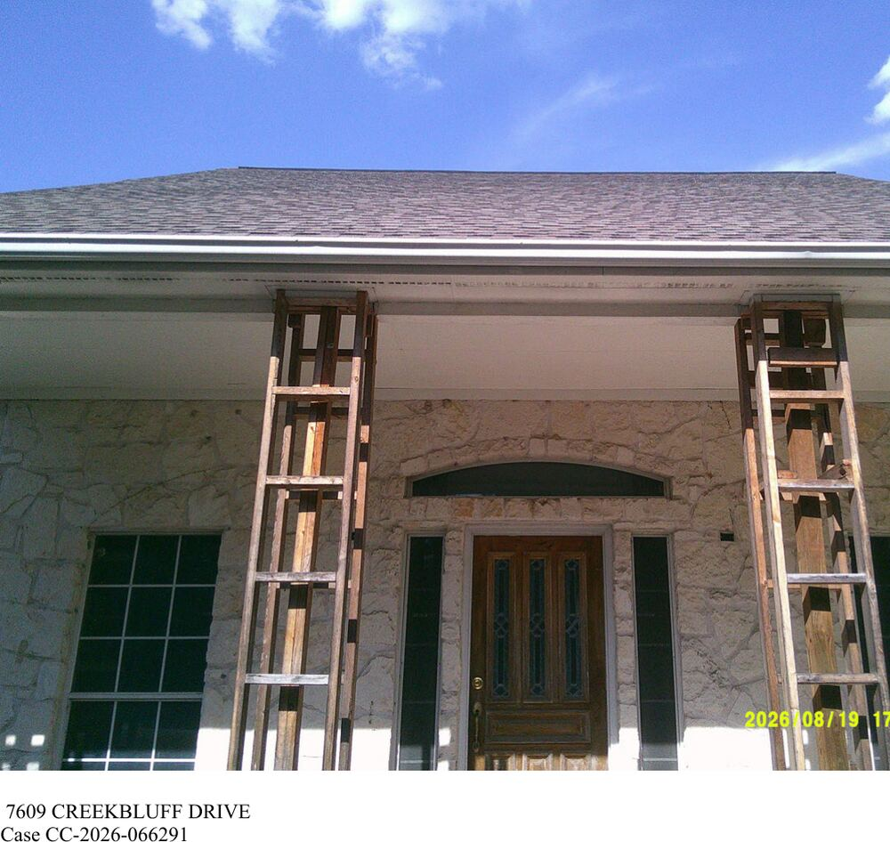
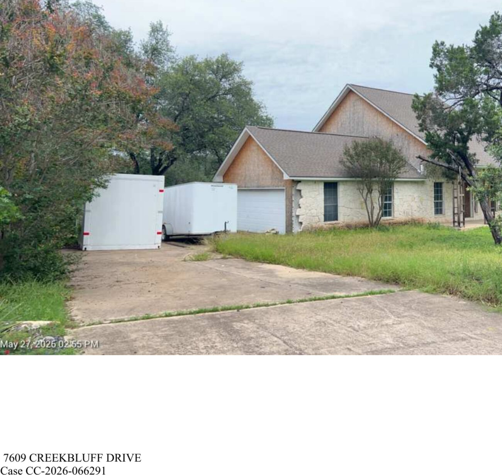
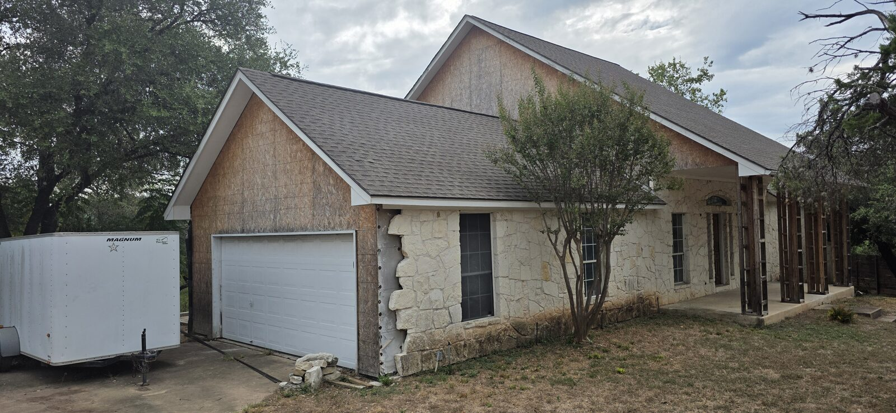
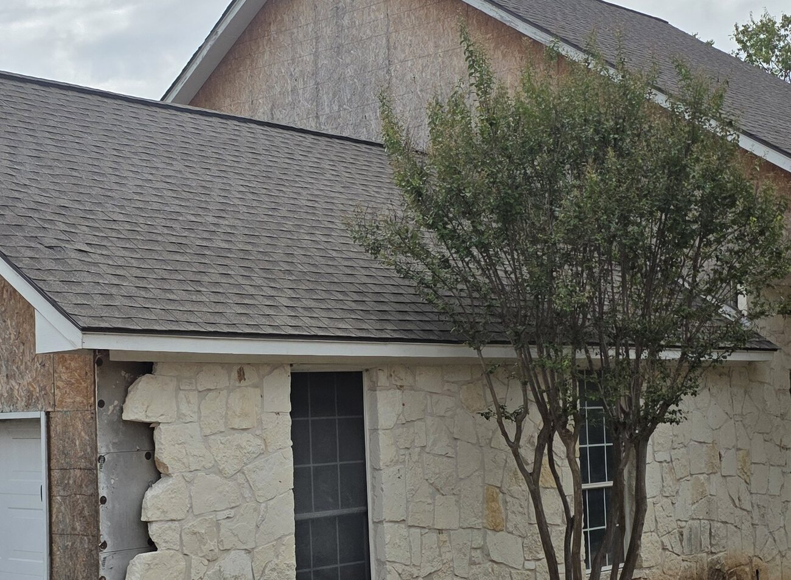
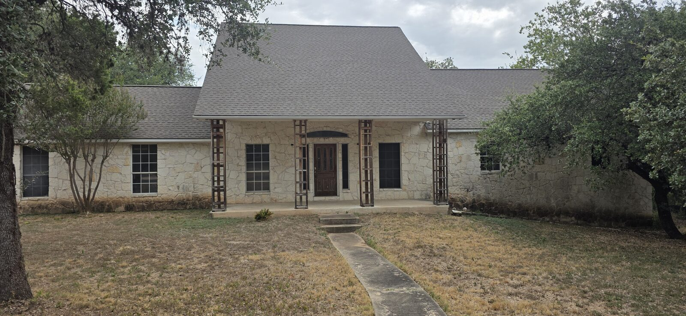
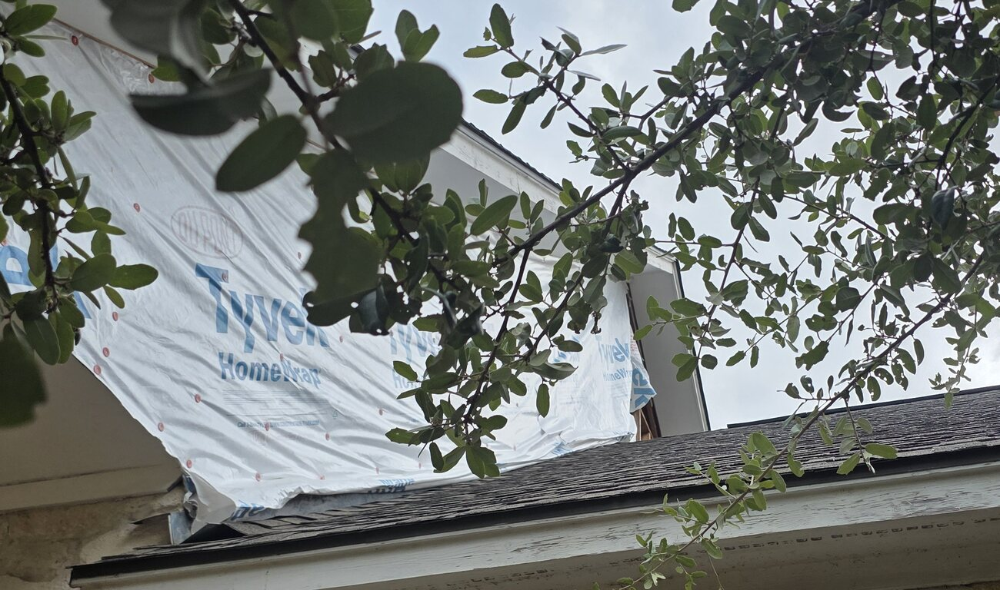
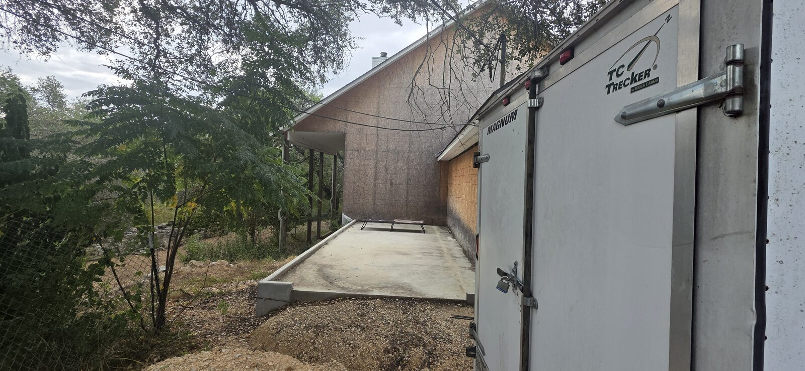
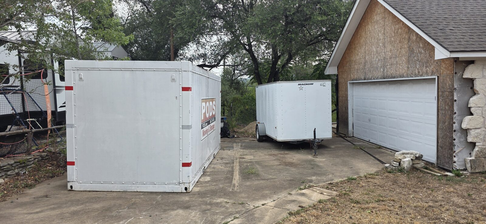

One notice tells the story better than nine years of them. Notice of Violation CV‑2026‑067670 is short, specific and recent. It names three conditions, quotes the code section each one violates, states in plain language what the owner must do to fix it, and sets a deadline. Ninety days later the City recorded that all three had been corrected and closed the case. This report follows that notice from the day it was written to the state of the house two weeks after it was closed — using the City's own documents and photographs for the first part, and photographs taken on the property on September 4, 2026 for the last.
The finding is narrow and it is checkable by anyone: the City cleared violations that were not corrected. Two of the three cited conditions are visibly unchanged. The one that was corrected — the grass — is the one that takes an afternoon.
I. What the notice actually said
The notice was written by Code Inspector Erica Thompson and dated June 2, 2026, following her inspection of May 27. It was addressed to 7609 Creekbluff LLC, PO Box 684196, Austin TX 78768‑4196, for the property legally described as Lot 18, Block C, Lakewood Park Section 4, parcel 0147090104, zoned SF‑2.1
It is worth reproducing what the City required, because the specificity is the point. These are not vague findings. Each item names the defect and prescribes the fix.
The notice also carried the two provisions that give it force beyond the repair list: a prohibition on selling, leasing or transferring the property until compliance is attained unless the transferee is given a copy and the City is given the transferee's name and address; and a right of appeal to the Building and Standards Commission, to be exercised within twenty days of the date of the notice — by June 22, 2026.
II. The notice never reached anyone
The City mailed the notice four times on June 2: certified and regular mail to the owner LLC, and certified and regular mail to its registered agent. Both certified copies came back.
| Copy | Addressed to | Certified article | Result |
|---|---|---|---|
| Owner | 7609 Creekbluff LLC PO Box 684196, Austin TX 78768 | 9589 0710 5270 3380 1275 48 | Returned to sender — "ATTEMPTED NOT KNOWN, UNABLE TO FORWARD," June 10, 2026 |
| Registered agent | 7609 Creekbluff LLC c/o Steve W. Johnson | 9589 0710 5270 3380 1275 55 | Returned unexecuted, recorded June 18, 2026 |
The City's own file contains the explanation. The address the notice went to is the one Travis Central Appraisal District carries for the parcel. The Texas Secretary of State record for 7609 Creekbluff LLC — reproduced two pages after the returned envelope in the same production — gives a different address for both the company and its registered agent: 3100 Kramer Ln Apt 534, Austin TX 78758.2 The notice was not sent there. Nothing in the file records a re-service attempt.
The compliance deadlines, the twenty-day appeal window and the transfer restriction all run from the date of the notice, not the date of receipt. So the clock ran regardless. But the practical effect is that the City spent the entire compliance period corresponding with no one — and then recorded that the recipient had voluntarily complied.
The notice itself anticipates this. It instructs the recipient that if they no longer own the property they must file an ownership affidavit within twenty days, and warns that otherwise ownership is presumed. That machinery only functions if the notice arrives.
III. Seventy-eight days of nothing
The case log for CC‑2026‑066291, the complaint that generated this notice, contains exactly four entries. Between the second and the third, nothing is recorded for two and a half months — through the seven-day deadline, the twenty-day appeal window and the thirty-day repair deadline.
- May 26, 2026Complaint filed. "Concerns a property that is not a primary residence for the owner, and has been gutted and not occupied for the last 7 years. (Submitted to District 10 by a citizen)." Assigned to Keenan Curry.
- May 27, 2026Insp. Erica Thompson inspects and photographs. Sixteen photographs taken between 2:52 and 2:57 p.m.
- May 28, 2026Log entry: "Inspection performed. opening CV case to address violations."
- June 2, 2026Log entry: "Send CV Notice." Notice CV‑2026‑067670 issued and mailed.
- June 9, 2026Seven-day deadline for the weeds expires. No entry.
- June 10, 2026Owner's certified copy returned undelivered. No log entry.
- June 22, 2026Twenty-day window to appeal to the Building and Standards Commission expires. No entry.
- July 2, 2026Thirty-day deadline for the porch posts and exterior walls expires. No entry. No re-inspection.
- Aug 19, 2026Insp. Darin Wesley conducts the follow-up — 48 days after the repair deadline, 78 days after the notice.
- Aug 31, 2026Case closed: "Closed due to Voluntary Compliance."
The notice warns that failure to comply "may include" criminal charges of up to $2,000 per violation per day, civil penalties of up to $1,000 per violation per day, and referral to the Building and Standards Commission. Every deadline in the notice passed without a logged inspection. None of those consequences was pursued.
IV. The closure
Inspector Wesley's follow-up note is three sentences of substance. The second is the one the closure rests on:
"The repairs made to the exterior of the structure" is the entire evidentiary basis for clearing items 1 and 2. It does not say what was repaired, by whom, or when. It does not reference a permit, and none was required to be checked — but the note does not describe a single physical change to the property. All three violations were recorded as Cleared.
V. What the City photographed that day — and what it didn't
Wesley took seven photographs on August 19 and loaded them into the case file. They are pages 260 through 266 of the released production. Catalogued by subject, they are:
- p. 260A street sign at the Creekbluff Dr intersection and the roadway. The house does not appear.
- p. 261The front elevation, wide, from the front walk. Porch posts visible at centre.
- p. 262The front-left yard. Trees and the two trailers; the garage elevation is behind foliage and not legible.
- p. 263The front yard and a cedar; mown grass. House partly visible at the frame edges.
- p. 264Roofline and soffit above the porch, right side, with two posts.
- p. 265The front entry, close, with both porch posts full height.
- p. 266Roofline and gutter above the porch, looking up; one post at frame edge.
Item 2 of the notice cites conditions on one specific elevation: "Siding missing from left side of house and surrounding garage door. Brick facade missing from front left corner of house."
None of the seven photographs taken on the day that violation was cleared shows the left elevation or the garage door. Inspector Thompson had photographed exactly that elevation twice on May 27, when she cited it. On August 19 it was not photographed at all.
The porch posts, by contrast, were photographed repeatedly — and they are the subject of item 1. Placed beside the May photographs, they show no change.


VI. The property on September 4, 2026
Sixteen days after the case was closed, and five days after the closure was entered in the City's system, I photographed the property from the street and the driveway. The photographs below were taken between 10:43 and 10:46 a.m. on September 4, 2026. Their embedded camera data — date, time and GPS coordinates placing them at the property — is intact in the published files and can be inspected by anyone who downloads them.3
Item 2 — the exterior walls
This is the elevation the notice describes: the left side of the house and the area surrounding the garage door. The condition cited on May 27 is the condition photographed on September 4.



Item 1 — the front porch posts

The Tyvek
One condition visible on September 4 is not cited anywhere in the notice, and does not appear in any City photograph in the file from either the May or the August inspection. At an upper wall above the roofline, the building is closed in with nothing but housewrap — and the housewrap has torn loose and is hanging free.

On its face this is the same defect item 2 describes — an exterior wall that is not free from holes, breaks or loose materials, and not "properly surface coated where required to prevent deterioration." It is on a different elevation from the one the notice names. Because no City photograph in the file covers this wall on either inspection date, the record does not establish when the sheeting tore loose, and this report does not assert that it was in this condition on August 19. What the record does establish is that the City has never photographed or cited it.


VII. Item by item
Setting the notice against the photographic record, the three items resolve as follows.
Required: "Replace/repair front porch post trims and ensure stability and the footings are sound." City disposition: Cleared, August 19, 2026.
The City's own photographs from May 27 and August 19 show the posts in the same condition: open timber frames, no trim, no cladding, no protective treatment. The author's photograph of September 4 shows the same. The below-grade footing condition cannot be assessed from any of these photographs, by the City or by this report.
Required: "Replace siding and brick to prevent further exposure to the elements." City disposition: Cleared, August 19, 2026.
The cited elevation was photographed by the City on May 27 and by the author on September 4. The two images show the same two gables in bare sheathing and the same vertical break in the stone facade beside the garage door. The City took no photograph of this elevation on the day it cleared the violation.
Required: "Mow grass and maintain to under 12 inches at all times." City disposition: Cleared, August 19, 2026.
The lawn was mown. The City's August 19 photographs show it cut, and the author's September 4 photographs show it still short. This item was corrected. It was also the only item of the three that required no materials, no contractor and no permit.
The City cleared three violations. One of them had been fixed.
VIII. What clearing the case cost
Closing CV‑2026‑067670 as complied-with was not a neutral filing act. It extinguished four things.
| What the open notice provided | Effect of the closure |
|---|---|
| Transfer restriction. Sale, lease or transfer prohibited until compliance is attained unless the transferee receives a copy of the notice and the City receives the transferee's name and address. | Lapses on a finding of compliance. The property may now be transferred without notice to the City. |
| Escalation path. Criminal charges up to $2,000/violation/day; civil penalties up to $1,000/violation/day; referral to the Building and Standards Commission with power to order repair, securing, or demolition. | Unavailable on a closed case. Re-establishing it requires a new complaint, a new inspection, a new notice and a new compliance window. |
| Repeat-abatement clause. For twelve months from June 2, 2026, a further §10‑5‑21 violation lets the City clean the property without further notice, at the owner's expense. | The clause survives to June 2, 2027 on its own terms — the one enforcement tool the closure leaves standing. |
| An open, documented record. An active case that the neighborhood, the council office and any prospective buyer could point to. | Replaced by a record showing voluntary compliance and no outstanding violations at the property. |
That last consequence is the one that compounds. The City's public case record now reports that the conditions at 7609 Creekbluff Dr were brought into compliance in August 2026. Anyone searching the address — a title company, a buyer, a council office, a reporter — will find a clean file.
IX. What this is, and what it isn't
That the City cited three specific conditions with specific remedies; that both certified copies of the notice were returned undelivered; that no inspection was logged between the notice and the follow-up 78 days later; that all three items were marked cleared on the strength of a one-sentence note; that the City photographed neither the cited elevation for item 2 on the day it cleared it; and that photographs of the cited conditions taken on September 4, 2026 show two of the three unchanged.
Why the inspector wrote what he wrote. This report makes no claim about the intent, competence or good faith of any City employee. A hurried inspection, a misread file, an unclear handoff between the supervisor who cited the violations and the officer who cleared them, or a genuine belief that the posts had been treated are all consistent with the record. The record shows the outcome, not the reason.
It also does not establish the condition of the porch footings below grade, which no photograph can show; whether any interior work has occurred, which the City has not verified since 2019; or when the housewrap on the upper wall tore loose.
X. What is being asked
1. Reopen CV‑2026‑067670, or open a successor case, and re-inspect items 1 and 2 against the photographic record published here.
2. State the basis for clearing item 2 — the siding and brick facade — given that the cited elevation was not photographed on August 19, 2026.
3. Re-serve any live notice at the registered agent's address on file with the Texas Secretary of State, 3100 Kramer Ln Apt 534, Austin TX 78758, in addition to the TCAD mailing address.
4. Include the housewrapped upper wall and the bare sheathed side elevation in the scope of any re-inspection. Neither has been photographed or cited.
5. Refer the property to the Building and Standards Commission if violations are confirmed on re-inspection — the step Code Compliance's own division manager committed to in writing on May 15, 2026, and which has never been taken.4
XI. Exhibits
- A Notice of Violation CV‑2026‑067670 — the notice and violation report as issued, June 2, 2026.
- M PIR C330239 — full City response, 266 pp. Case log at pp. 1–2 and 24–25; notice at pp. 50–55 and 57–62; returned envelope at p. 114; SOS record at p. 116; May photographs at pp. 244–259; August photographs at pp. 260–266. See also the stand-alone analysis of that file.
- N1 Front elevation, Sept 4, 2026 — 10:43:40.
- N2 Garage / left elevation, Sept 4, 2026 — 10:44:01 · facade detail.
- N3 Driveway, Sept 4, 2026 — 10:44:09.
- N4 Side elevation, Sept 4, 2026 — 10:44:32.
- N5 Housewrapped upper wall, Sept 4, 2026 — 10:45:29 · detail.
- N6 City photograph of the garage elevation, May 27, 2026 — Insp. Thompson, from PIR C330239 p. 257.
{kind=link}
{kind=link}
{kind=link}
{kind=link}
{kind=link}
{kind=link}
{kind=link}
{kind=link}
Method & limits
The documentary half of this report is drawn entirely from the City of Austin's response to Public Information Request C330239, released September 2, 2026, and published in full alongside it. Quotations from the notice, the violation report and the case log are verbatim. Deadline dates are computed from the date of notice as the notice itself directs.
The photographs dated September 4, 2026 were taken by the author from the public street and the driveway apron, between 10:43 and 10:46 a.m. They are published resized for the web; their original camera metadata, including date, time and GPS position, is preserved in the published files and can be read with any EXIF viewer. Two images are additionally published as cropped details, identified as such; no image has been retouched, composited or otherwise altered.
Comparisons are stated conservatively. Where a photograph cannot resolve a condition — the porch footings below grade, the date the housewrap tore — the report says so rather than inferring. The catalogue of the City's August 19 photographs describes all seven; readers can verify it at pp. 260–266 of the published source.
This report concerns the handling of a code case. It does not allege criminal conduct by any person or entity, and it makes no claim about the intent of any City employee.
Notes & Sources
- Notice of Violation CV‑2026‑067670 and accompanying Violation Report, City of Austin Development Services, Code Officer Erica Thompson, dated June 2, 2026. Reproduced at PIR C330239 pp. 50–55 (owner copy) and pp. 86–91; the registered-agent copy at pp. 57–62 and 93–98. Also published separately as Exhibit A. Violation dispositions and notice history at PIR C330239 pp. 1–2.
- Returned certified envelope, article 9589 0710 5270 3380 1275 48, endorsed "RETURN TO SENDER — ATTEMPTED NOT KNOWN — UNABLE TO FORWARD," PIR C330239 p. 114; return receipt card, p. 115. "Returned unexecuted 06-10-26 on June 18, 2026" for the registered-agent copy, p. 2. Texas Secretary of State entity record, 7609 Creekbluff LLC, filing #806107975, showing the registered agent and registered office address, p. 116.
- Photographs by Mark Garcia, September 4, 2026, 10:43:40–10:45:29 CDT, Samsung Galaxy S25 Ultra. Embedded GPS position 30°22′40.5″N, 97°47′5.1″W (and 30°22′41.0″N, 97°47′4.5″W for the final frame), corresponding to 7609 Creekbluff Dr. Metadata preserved in the published files, linked in the exhibit list above.
- Email from Daniel Armstrong, Division Manager, Code Compliance – Field Operations North, to the District 10 council office, May 15, 2026: "If any code violations are noted, she or her designee will follow established processes for providing notice to the property owner and if necessary ensure escalation to either a quasi-judicial or judicial hearing." PIR C330239 p. 35. Violations were noted on May 27, 2026. The file contains no referral to the Building and Standards Commission.
Legal Notice
This report is published in the public interest. It concerns the handling of a municipal code-enforcement case and is grounded in a City of Austin public record obtained under the Texas Public Information Act, together with dated photographs taken by the author from the public street. Statements about what the record and the photographs show are statements about those documents and images. The report does not allege criminal conduct by any person or entity, and makes no claim about the intent of any City employee or property owner. It is not affiliated with the City of Austin or any governmental body. Corrections supported by a source are welcomed via the repository's issue tracker.